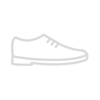
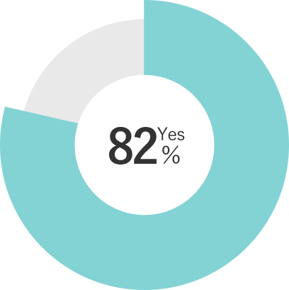

新鮮な野菜を無農薬で食べたい
そんなあなたのために FreeksFoodは誕生しました
農薬が使われているのか心配・・・
子供には新線や野菜を食べさせてやりたい・・・
新鮮で質の良い野菜を食べたい・・・
旬の野菜を考えることが大変・・・
FreeksFoodなら、そのこだわりを全て叶えます
新鮮な野菜を無農薬で食べたい
そんなあなたのために FreeksFoodは誕生しました
農薬が使われているのか心配・・・
子供には新線や野菜を食べさせてやりたい・・・
新鮮で質の良い野菜を食べたい・・・
旬の野菜を考えることが大変・・・
FreeksFoodなら、そのこだわりを全て叶えます
ABOUT
新鮮な野菜をその場で梱包し即日配送！
FreeksFoodは農家の方と専属で契約しており、誰が作っているか確認することができ安心です。
また、朝に採れたての野菜を即梱包し、発送するので鮮度は抜群！
無農薬なので安心して食べられる！
広大な土地で無農薬栽培しています。
無農薬なので虫食いもあるかもしれませんが、生産者がしっかりと分別しながら梱包しえいます。
そのためお子様でも安心して食べることができます。
FreeksFoodが選ばれる4つの理由
01 高い安全性
生産者と共に適切にFreeksFood側の社員が管理状態をチェックしています。
そして、その結果をホームページで確認することができます。
結果の確認など安心できるか

02 種類の豊富な野菜を選べる
全国に多くの農家様と契約しているので、色々な野菜を選ぶことができます。
食べたい野菜を選ぶことができた？

03 即日配達で新鮮
朝に採れた野菜を即日発送するので、頼んでからすぐの新鮮な野菜を食べることができます。
野菜は新鮮でしたか？
04 野菜の美味しい食べ方も知れる
いざ野菜をもらっても、どう食べれば良いか分からずサラダのみになりやすいところです
しかしFreeksFoodでは美味しい野菜の食べ方を紹介するメニューも知れることができます。
献立をかんがえる苦労が減った？

FREQUENTLT ASKED QUESTIONS
ホームページでは何を確認できますか？
ホームページでは生産者、無農薬で正しく生産されているかを確認することができます。
届くまでにどのくらいかかりますか？
場所によりますが、関東・関西・東北は1日、北海道・沖縄・四国は2日かかることがあります。
ただ、野菜は朝に採れたものを送るので新鮮なまま食べることができます。
返品することはできますか？
発送後の返品・返送は承っておりません。傷物が入っているかもいれませんが、それは無農薬で栽培するためご理解をお願いいたします。
生産者の方にメッセージは送れますか？
発送した野菜には、生産者の方の情報をお伝えいたします。そのため、直接メッセージを送っていただくか、お問い合わせフォームの